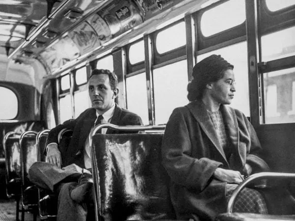
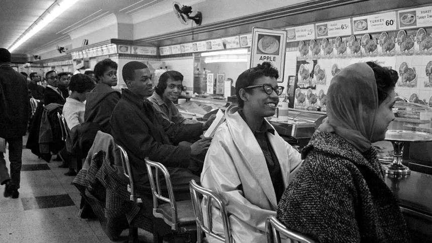

1954 - Brown v. Board
"L'éducation est le premier pas vers la liberté."
Le 17 mai 1954, la Cour Suprême des États-Unis déclare la ségrégation scolaire inconstitutionnelle. C'est une victoire majeure, mais la réalité des murs de briques reste à abattre physiquement et psychologiquement. Cliquez sur le mur pour le détruire.




1955 - Boycott des Bus
Rosa Parks refuse de céder sa place. Le peuple marche.
Le boycott de Montgomery a duré 381 jours. 40 000 personnes ont marché chaque matin plutôt que de s'asseoir dans l'humiliation. Glissez le bus hors de l'écran pour soutenir le mouvement et découvrir les archives.
1960 - Sit-ins de Greensboro
La dignité face à la haine.
Le 1er février 1960, quatre étudiants s'assoient au comptoir réservé aux blancs d'un restaurant Woolworth. Insultés, agressés, ils restent de marbre. Leur silence résonne plus fort que les cris de la foule. Glissez le curseur pour voir la couleur de l'espoir remplacer le noir et blanc de l'oppression.
